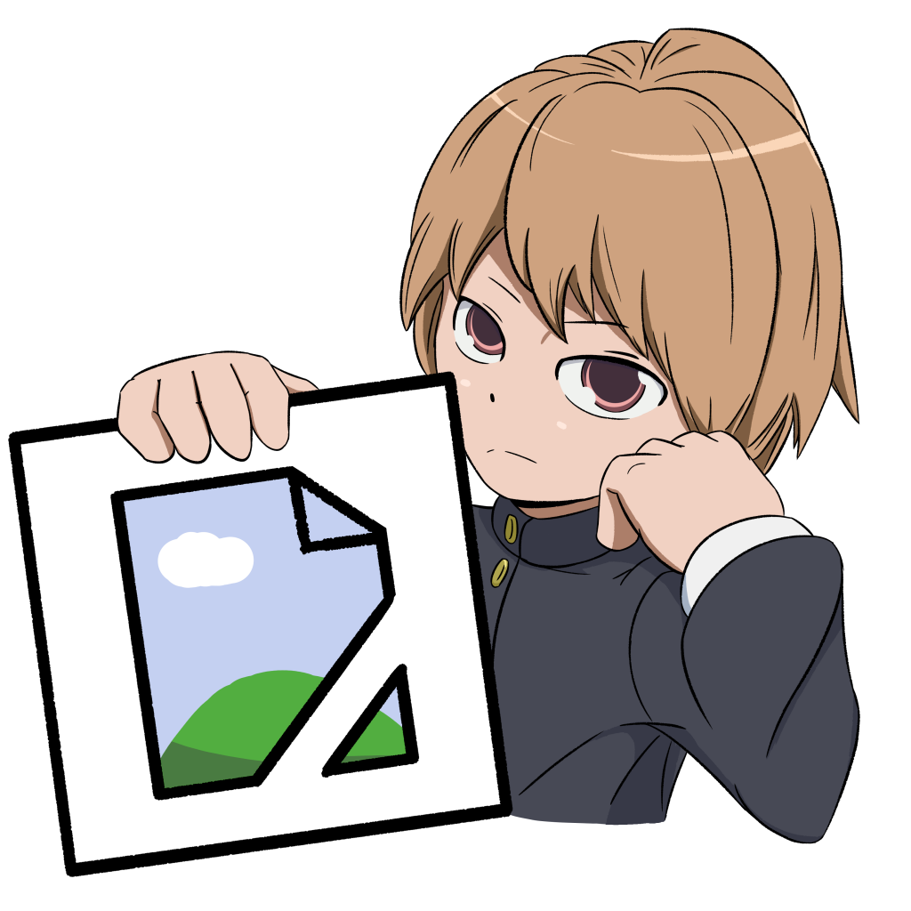

Welcome to the "Toranoko!" website!
"Toranoko!" by InfernalFury270 (IF270) is a fan fiction of "Toradora!" by Takemiya Yuyuko.
It's a spinoff-sequel that with a new, wide cast of characters,
taking place 20 years after the events of the original series.
On this website, you can learn about the series, read "Toranoko!" content or check out the characters!
To start reading "Toranoko!", go to the bar at the top and click "Read"!
Latest Content & News
Read the first two chapters of Toranoko! Volume 0.
Currently In Development
Chapter 3 of Toranoko! Volume 0
Changelogs
Entry Date
Entry Text
No entries found.
What is "Toranoko!" about?
Takasu Haruko, Mitsuko and Katsuko were the precious treasures of Taiga and Ryuuji,
born under the promise that their children would be raised with more love and care than they had been given themselves
in the hopes that they would grow into wonderful people and be a happy family together. However, even with a lavish house
and delicious meals everyday, the question of whether that would be enough to fulfil it had yet to be answered.
After learning that their school days were a far cry from the fluffy dreams their parents had fed them,
the triplets found solace in each other's company. Academically, they were barely scraping by. Socially, they only struggled,
unable to find peers they could connect with. It didn't help that their towering height and peculiar bodies made them
stick out like a sore thumb. But as long as they had each other, they believed they could survive.
But is this sisterly trifecta truly the path towards a bright future for the girls? Perhaps it would leave
them sheltered from the rest of the world, leaving a void that can only be filled with new, warm connections. As the sisters
develop through their years at Ohashi High School and they start finding their footing in the world, they begin to learn
whether blood really is thicker than water.
Start reading all "Toranoko!" works here.
Feel free to download my works to read offline!

"Toranoko!" is recommended for readers 16 years old and above.
Newsletters
My newsletters.
Read about all the characters here.
Character
Description